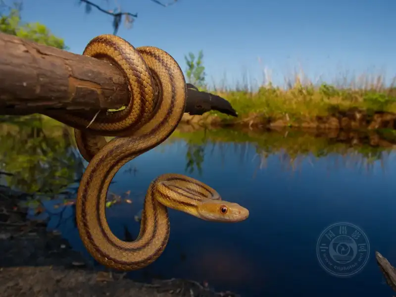
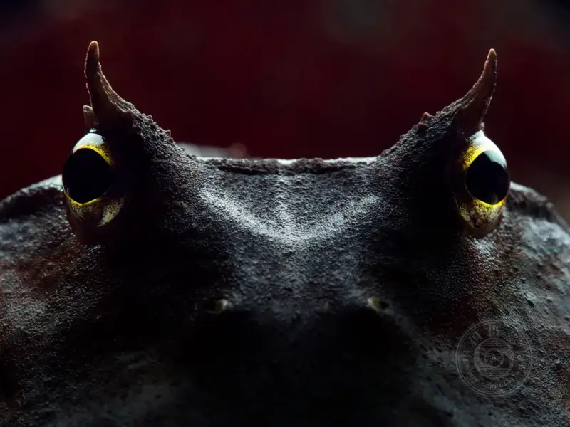
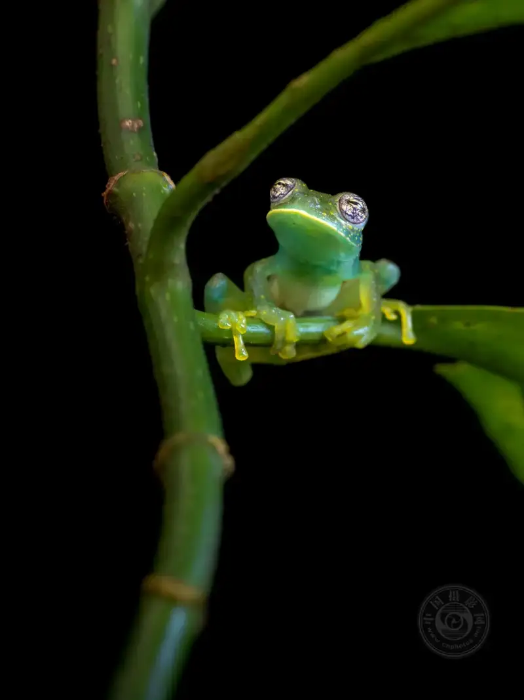
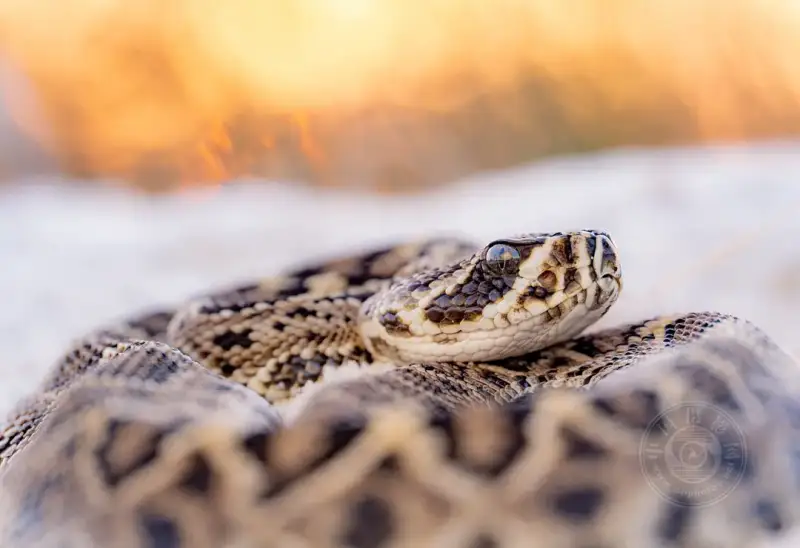
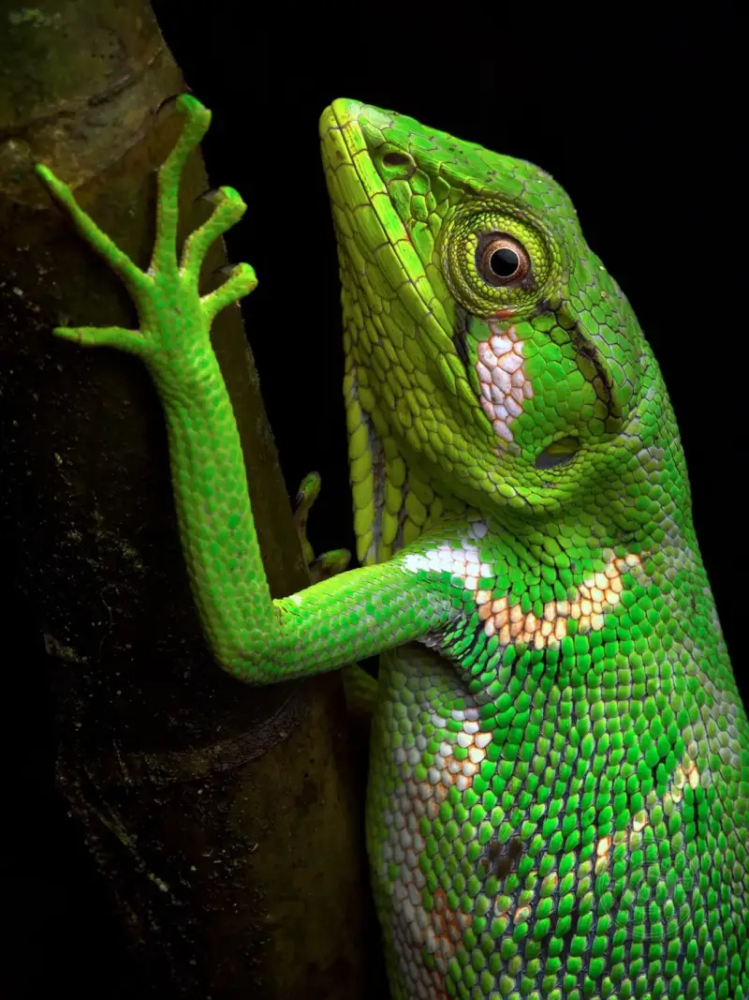
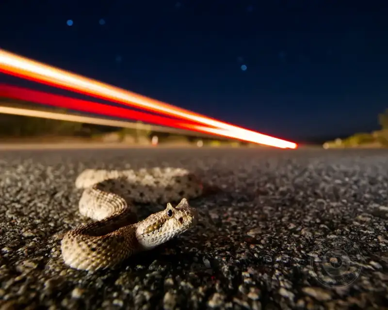
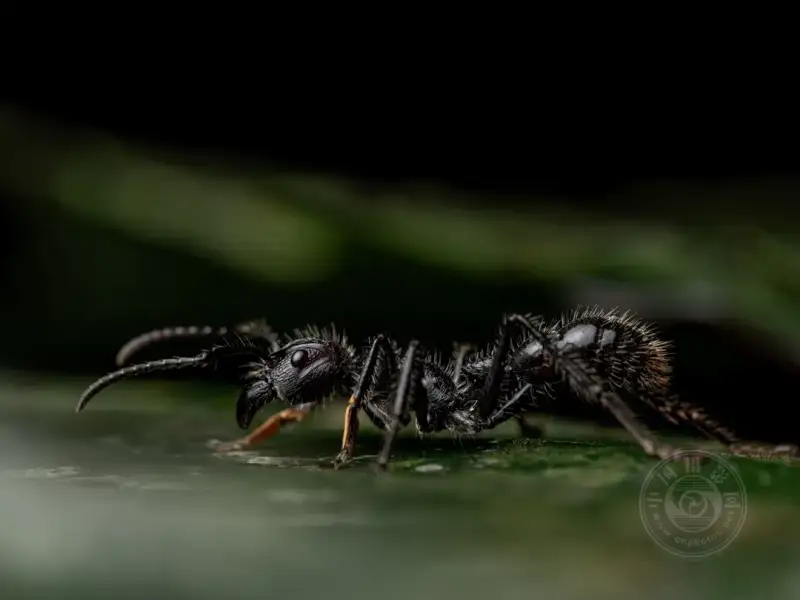
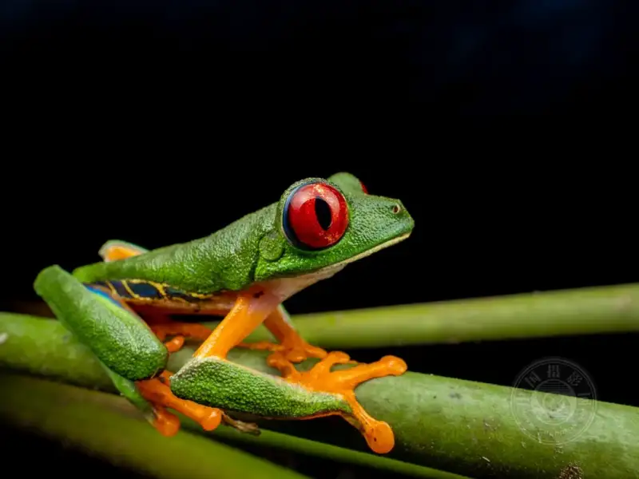

Published: 2024-03-26
Original link: https://www.cnphotos.net/academy/show-167.html
Using a flash is one of the best ways to raise your photography to the next level. Even so, I often see promising new photographers give up because of the early challenges of flash photography. Experienced photographers also make many of the same mistakes. That is why I wrote this article, to share the nine mistakes I see photographers make most often with flash.
1) Using automatic camera settings
By far the most common mistake with flash is to rely on some form of automatic camera setting. For most photography, semi-auto modes such as aperture priority or auto ISO help get the exposure right quickly, but for flash photography this usually does not work.
The simplest way to avoid this is to use fully manual settings. Manual mode may look hard most of the time, but it makes flash photography easier. I also prefer a manual flash, although some photographers find TTL flash faster when switching between types of subject.
With a little practice, you will learn which settings to use. For macro, I always start at f/11, 1/200 s, and ISO 200, with the flash at quarter power. This is close to the exposure I want, and then I fine-tune the flash output or the aperture. If you rely on automatic settings for flash, it is time to change.

DC-G9 + LEICA DG SUMMILUX 9mm F1.7 @ 9mm, ISO 100, 1/80, f/9.0
2) Fixing the flash on the camera
Firing the flash from the same angle as the camera is often unattractive. The light casts almost no shadow, the subject eyes may go red, and the photo often lacks depth. No wonder it is called deer in headlights. The fix is to buy a flash you fire off-camera with a wired or wireless trigger. If you want high-quality light, this matters a great deal. Even moving the flash a little away from the camera makes the lighting look better. By controlling where the shadow falls, you can also get more effects.
If you must keep the flash on the camera, modify it in some way. You can use bounced flash by aiming the flash at a reflective surface, such as the ceiling for indoor portraits. Or you can use a softbox or diffuser mounted in front of the flash. Although I prefer off-camera flash, either method is far better than aiming an unmodified flash at the subject.

DC-G9 + OLYMPUS M.60mm F2.8 Macro @ 60mm, ISO 200, 1/250, f/11.0
3) Not diffusing the flash
An undiffused flash definitely casts harsh shadows and creates bright highlights, which is usually unattractive. This is where an external flash helps. With an off-camera flash and a softbox, you immediately see a clear improvement in light quality.
In short, a diffuser spreads the flash light so it no longer comes from a single point. This softens shadows in the photo and cuts distracting blown-out reflections.
A reflector or a white wall works like a diffuser by spreading the light before it reaches the subject. So for indoor shooting, you can bounce the flash off the ceiling instead of carrying a dedicated diffuser.
OM-1 + OM 90mm F3.5 @ 90mm, ISO 200, 1/250, f/10.0
4) Ignoring other light sources
The beauty of a flash is that it lets you fully control the lighting on the subject. You can change the position and strength of the shadow by moving the flash or the reflector.
But besides the flash, other light sources are usually in the photo. If you are not careful, ambient light such as the sun or sky, indoor ceiling lights, or a flashlight will seep into the frame. Either you make the flash brighter so it overrides the ambient light, or you use the ambient light to shoot a well-lit photo.
Ignoring other light sources leads to the following:
Unwanted reflections and shadows in the shot, especially in the subject eyes
Color cast from mixed white balance
Uneven light, especially in the shadows
One solution is to remove the external light. For this you must:
A) Set the flash to high output;
B) Stop down the aperture so it does not capture ambient light;
C) Move the flash close to the subject. For macro this is a good option, and with a bright enough flash, a daytime shot can even look like it was taken at night.

OM-1 + OM 90mm F3.5 @ 90mm, ISO 640, 1/200, f/9.0
More often, though, some ambient light remains in the scene. Because of the scene brightness and the distance to the subject, this is especially hard to avoid in outdoor portraits.
In this case, the best fix is usually the opposite: lower rather than raise the flash power. You are filling in the ambient light, not overriding it. This is often called fill flash.
For example, if you shoot at sunset and in golden hour, you want to keep the golden glow obvious. To do this, you must lower the flash output until it matches the ambient light. Finding the right flash brightness takes trial and error, which is one reason I prefer a manual flash over TTL most of the time.
Also, do not forget the potential of flash gels to change the flash color temperature, especially at sunset or under indoor artificial light. Otherwise you use a harsh flash, which can be a fatal problem: the subject is lit white while the surroundings are a different color, usually orange. Flash gels are the only good way to balance this.

OM-1 + OM 90mm F3.5 @ 90mm, ISO 100, 1/30, f/4.0
5) Not stopping down the aperture
Quick test: your flash photo is too bright. What is the fix?
One answer you might think of is to lower the flash power, but this is usually wrong, especially if the whole photo looks too bright, not just the part lit by the flash.
Instead, a common problem with flash is that most cameras have a very limited flash sync speed, usually at most 1/200 s or 1/250 s. These shutter speeds are fine most of the time, but in bright outdoor scenes, especially beach or snow photography, they capture too much light.
So if your photo is overexposed, you should use a smaller aperture, and you may even need to raise the flash power. In other words, it is not the flash that is too bright, but the ambient light that is too strong.

DC-G9 + OLYMPUS M.60mm F2.8 Macro @ 60mm, ISO 200, 1/200, f/11.0
6) Thinking about shutter speed in the traditional way
We usually think of shutter speed as the variable that captures different amounts of light and that causes more or less motion blur. But with a flash this changes. In effect, you make two exposures at once: the flash exposure and the ambient exposure. The shutter speed only affects the ambient exposure.
For example, you shoot in a pitch-black room where the flash is the only light source. It does not matter whether you use 1/200 s or 30 s. As long as the flash power is the same, the two photos look exactly the same.
This does not mean shutter speed is useless in flash photography. It only affects the ambient part of the exposure. The brightness around the subject changes, and the motion blur in the surroundings changes, depending on the shutter speed you set.
So with a long enough shutter speed, the flash freezes the subject completely while the background is full of motion blur. Likewise, you can shoot at the camera flash sync speed (usually 1/200 or 1/250, depending on the camera) to weaken the ambient light around the subject as much as possible.

OM-1 + OLYMPUS M.8-25mm F4 @ 8mm, ISO 500, 10/1, f/4.0
7) Catching a bad white balance
At first glance, using a flash can cause disturbing white balance problems. For example, your flash may be partly blocked by green leaves, or your homemade flash diffuser may cast a slight blue light. Whatever the cause, I see many photographers post flash photos with serious color balance problems.
I solve this two ways: I set a custom white balance for each flash, and I shoot RAW so I can adjust the white balance carefully in post.
On the first point, not all flashes or diffusers have the same color cast. One diffuser I use for macro has gathered dust over the years and leans orange, while another leans cool because of the material it was built from. If my white balance is not set correctly, the RAW photos from both look bad.
Using the custom white balance mode on most cameras, it is easy to calibrate the white balance in-camera by shooting a pure white photo (just search online for the calibration steps for your camera). A sheet of printer paper is a good test subject. Calibrating the camera this way saves a lot of time.
That said, if you shoot RAW, adjusting the white balance in post is very easy with no real side effects. It just takes longer if you must adjust every photo you shoot.
OM-1 + OM 90mm F3.5 @ 90mm, ISO 200, 1/200, f/13.0
8) Using a poor focus light
As someone who often shoots macro in low light, I often need a focus light to see the subject, compose, and focus properly.
However, a focus light that is too bright can cause unwanted reflections or a color cast. Another problem is that a bad focus light makes it hard to focus in the first place. Many flashlights do not emit constant light but rapid flicker, faster than the eye can see but slow enough to cause problems for the camera. This is obvious when black bands appear on the camera live view as you try to compose.
So look for a focus light with adjustable brightness that you can dim a lot. Also test it beforehand to see whether these bands or flicker appear and make your focusing harder.

OM-1 + OM 90mm F3.5 @ 90mm, ISO 200, 1/200, f/7.1
9) Not using a flash
Last but not least, not using a flash at all is one of the biggest mistakes I see. Some photographers try hard to avoid using a flash. This is probably because they hit some of the problems above, but with the right technique, most of them are easy to avoid.
A flash opens up new possibilities and solves many problems. It gives you a level of control over the photo that no other method can match. Even if you love natural light, you can make a flash look as beautiful and interesting as the best natural light.
So do yourself a favor. If you have been avoiding the flash, let this be the push to try it. It is not as hard as it first looks, and the tips in this article set you on the right path.

OM-1 + LEICA DG SUMMILUX 9/F1.7 @ 9mm, ISO 80, 1/200, f/11.0
I hope this article solves some of the problems you face with flash photography, or eases some of your fears about it. Avoid the few points above, and you will quickly raise your flash photography and widen your creative range.
(Author: Nicholas Hess, wildlife photographer)